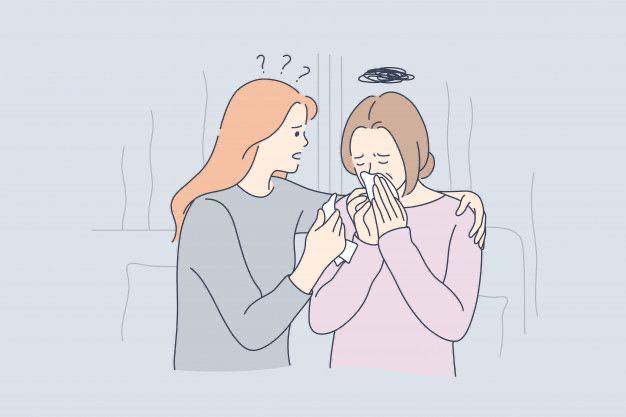
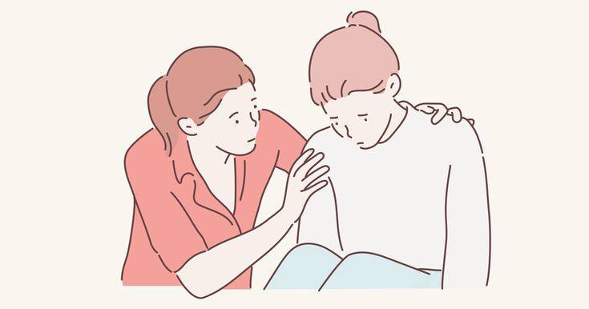
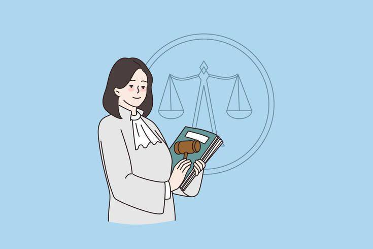
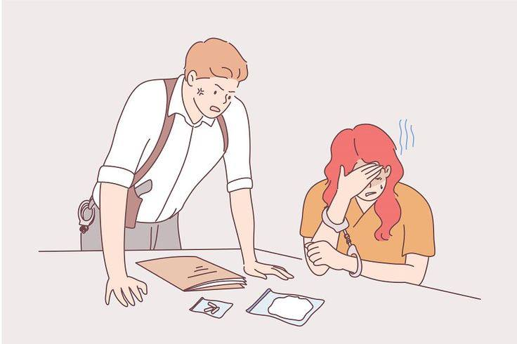
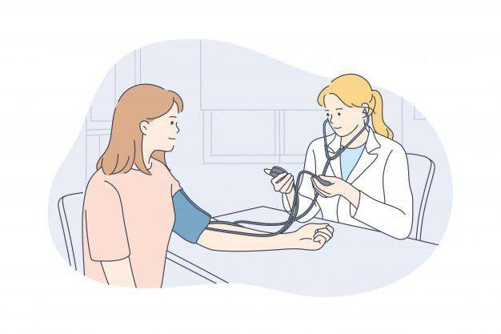

Сіз өзге адамға қалай қолдау көрсете аласыз?
Біреудің зорлық-зомбылық жағдайына төтеп беруін көру кез келген жағдайда қиын болуы мүмкін және зорлық-зомбылықтың ескерту белгілерін көргенде қалай дұрыс жауап беру керек екені әрқашан анық бола бермейді.
Егер зорлық-зомбылықтан зардап шеккен жақын адамыңызға сіз қалай қолдау көрсете аласыз?
Эмоционалдық қолдау
Қарым-қатынаста зорлық-зомбылық тәжірибесі ауыр “травма” болып табылады және қатыгез қарым-қатынастың кез келген сатысындағы адамдар қиын эмоцияларды өңдеп, келесі қадамдарын жасау кезінде басқалардың қолдауына тәуелді болуы мүмкін.
Сіз оларға қажетті эмоционалды қолдауды көрсете аласыз:
Олардың жағдайы қиын, қорқынышты және бақылауды қалпына келтіру үшін батыл екенін түсіндіру.
Олардың шешімдерін сынамаңыз және жасаған таңдаулары үшін оларды кінәламаңыз.
Сіз оларды «құтқарып» алмайтыныңызды және олардың өміріне қатысты шешімдерді тек олар қабылдауы керек екенін есте сақтаңыз.
Материалдық қолдау көрсету
Жағдайға байланысты құрбан өзін қорлаушы серіктеске қаржылы түрде тәуелді болуы немесе материалдық ресурстарға қол жетімді болмауы мүмкін. Қарым-қатынаста зорлық-зомбылыққа ұшыраған адамға қолдау көрсетудің ең тікелей әдістерінің бірі - оның материалдық қажеттіліктеріне көмектесу.
Мүмкін болса, оларға тұрғын үй, тамақ, денсаулық сақтау және ұтқырлық сияқты физикалық қажеттіліктерге қолдау көрсету желісін анықтауға көмектесіңіз.
Төтенше жағдайда маңызды құжаттарды немесе «бару сөмкесін» сақтау арқылы оларға көмектесіңіз.
Полицияға қалай зорлық-зомбылық туралы арыз жаза аласыз?
Сізге келтірілген зиян нәтижесінде Қазақстан Республикасының заңнамасымен агрессор адамға қылмыстық не әкімшілік жаза қолданылады, ал келтірілген зиянның санатын сот медициналық эксперт анықтайды.
Полицияға арызды қалай жазуға болады?
- Сіздің денсаулығыңызға қандай да бір соққы нәтижесінде зиян келсе 112,102,103 нөміріне қоңырау шалыңыз, сіздің қоңырауыңыз автоматты түрде аудиожазба ретінде тіркеледі.
- Кез-келген полиция бөлімшесіне барып, арыз жазуға құқығыңыз бар.
- Арыз жазу кезінде барлық деректер сіздің айтуыңыз бойынша дұрыс жазылғанына көз жеткізіңіз, қосымша деректер болса, айтыңыз.
- Арыз жазу кезінде:
- Оқиға орын алған орын мен уақытын, күнін айтыңыз
- Сізге кім зиян келтіргендігі туралы ақпарат беріңіз
- Денеңізге қандай жарақаттар келгендігімен бөлісіңіз(Соққыларды құралмен жасаған жағдайда, қандай құрал, қанша рет соққы келгенін айтыңыз)
- Оқиғаға куәләрді келтіріңіз( Сіздің үйіңізде орын алса, көршілеріңізді немесе оқиға орын алмас бұрын Сізді сау күйде көрген дос, туыстарыңызды)
- Оқиға қоғамдық жерде орын алса, бейнежазба камераларына назар аударыңыз
- Керекті жағдайда медициналық көмекті сұратыңыз.
- Арыз жазғаннан кейін полиция қызметкерлерінен сізді сот медициналық экспертизаға жіберуін сұраңыз.
- Арыз бергеннен кейін, тіркелгендігі туралы талон алуды ұмытпаңыз.
Сіз зорлық-зомбылық әрекетінен зардап шексеңіз не істеу керек?
Қазақстан Республикасы Қылмыстық кодексінің 120,121 баптарына сәйкес Зорлау және Сексуалдық сипаттағы зорлық-зомбылық әрекеттері сараланады.
Аталған жағдайда:
- Қауіпсіз жерге барыңыз (Өзіңізбен не болғаны туралы жақыныңызға жеткізіңіз)
- 102,103 нөмірлеріне қоңырау шалып, полиция және жедел жәрдем шақырыңыз
- Суға түспеңіз және қолыңызды жумаңыз (Бұл әрекеттерді жасасаңыз, оқиғаға маңызы бар дәлелдер жойылу қаупі бар)
- Оқиға орын алған жердегі заттардың бастапқы күйде қалуын қадағалаңыз(Сіз киген киім, қолданған сүлгі немесе өзге де заттарыңыз заттай дәлелдеме болуы мүмкін, құқық қорғау органдарының қызметкерлерінің назарын осы заттарға аударыңыз)
- Полиция қызметкерлері келген кезде орын алған жағдайды толық түсіндіріңіз:
- оқиға күні, уақыты, орнын;
- агрессор адамның бет-әлпеті, киген киімі;
- оқиғаны көрген куәлардың байланыс деректері;
- бейнежазба камералары орнатылуы мүмкін жерлер туралы ақпаратпен бөлісіңіз.
- Жедел жәрдем көмегіне жүгініңіз, керекті медициналық көмекті алыңыз.
Физикалық зорлық-зомбылық жағдайында медициналық көмекке қалай жүгінуге болады?
Егер сіз физикалық зорлық-зомбылықтан зардап шеккен болсаңыз, міндетті түрде жарақат алу пунктіне баруға кеңес береміз. Егер жарақаттар ауыр болса және қозғалу қиын болса, жедел жәрдем шақырған жөн. Телефон нөмірі: 112 немесе 103. Есіңізде болсын, 112-ге қоңырау шалу кезінде жазба болады, бұл кейінірек көмектесе алады. Сізді кәдімгі қалалық емханада қабылдауға міндетті.
Дәрігердің барлық дене жарақаттарына назар аударыңыз. Соның ішінде зорлық-зомбылық нәтижесінде дене жарақаты әлі көрінбейтін жерлерде ауырсыну сезімдері. Физикалық зорлық-зомбылықтың кейбір салдары кейінірек көрінуі мүмкін (мысалы, көгеру немесе мидың шайқалу белгілері). Сондықтан әл-ауқат нашарлаған жағдайда медициналық мекемеге қайта жүгіну қажет.
Дәрігермен сөйлескен кезде оған не болғанын, кімге зақым келгенін, қалай болғанын және қай жерде, қандай дене жарақаттары бар екенін айтыңыз. Медициналық картада жәбірленушінің дене жарақатын қалай алғанын дәрігер көрсетеді. Карта медициналық ұйымда сақталады, сондықтан бәрін егжей-тегжейлі айтып беріңіз. Жалпы ереже бойынша азаматтың медициналық көмекке жүгіну фактісі, оның денсаулығы мен диагнозы туралы мәліметтер және оны медициналық тексеру мен емдеу кезінде алынған өзге де мәліметтер дәрігерлік құпияны құрайды. Алайда, дәрігер сіздің денсаулығыңызға зиян келтіру заңсыз әрекеттерден туындады деп айтуға жеткілікті негіз болса, полиция органдарына хабарлауға міндетті.